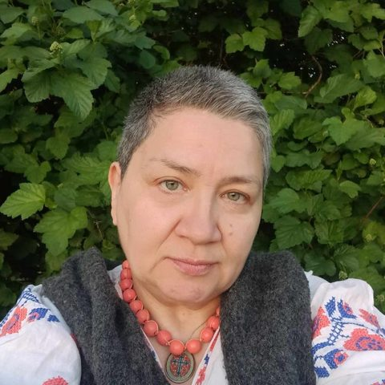

Agne Jociuvienė
President of the Foundation and initiator of activities

Tatjana Narkevičienė
Activity coordinator and initiator
Імена, фото та посади взято з поточного сайту фонду (посади залишено мовою оригіналу).
Стати амбасадором
Якщо вам близька місія фонду і ви готові розповідати про неї, напишіть нам.Чернетка
Написати нам